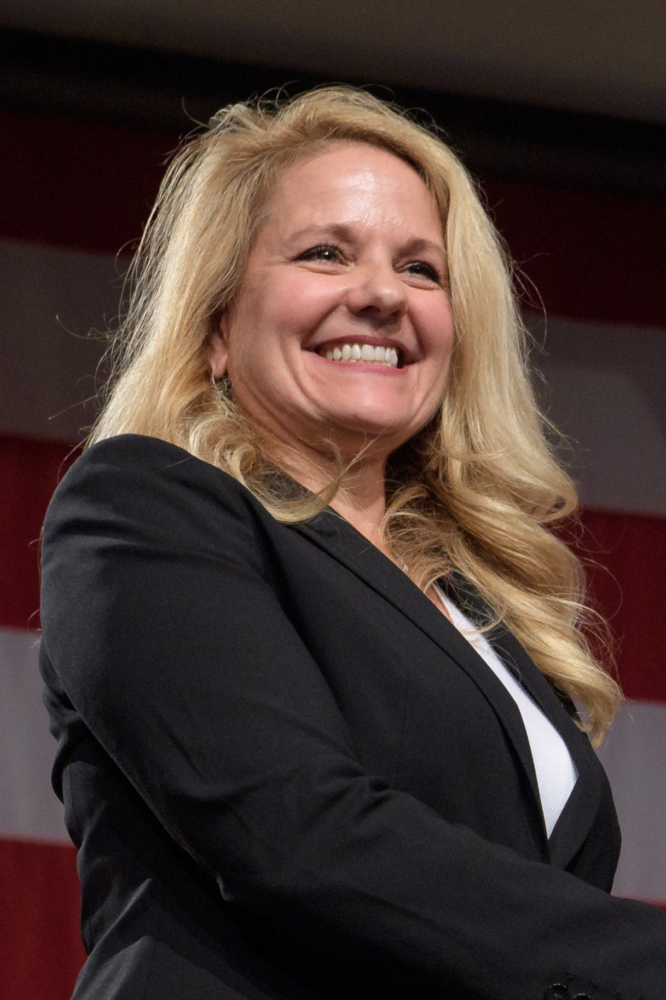
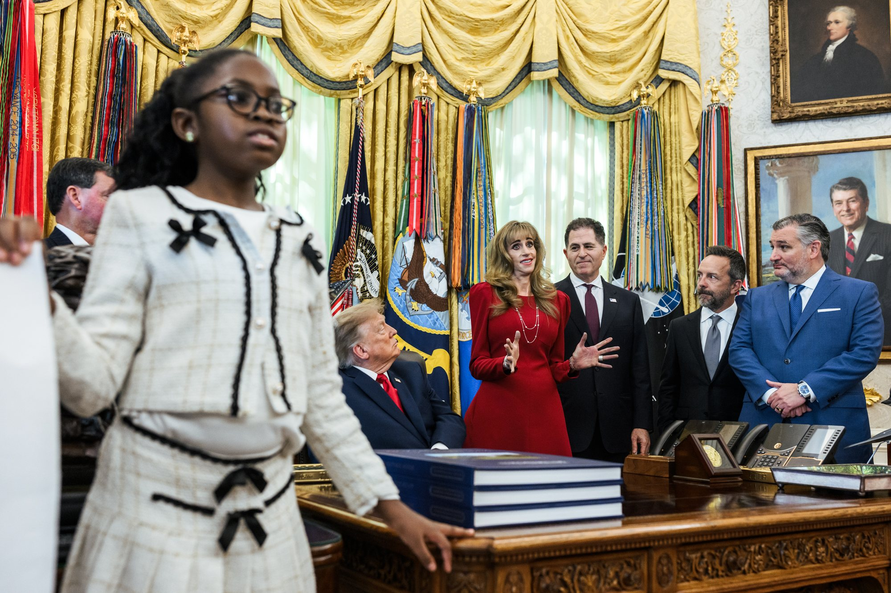
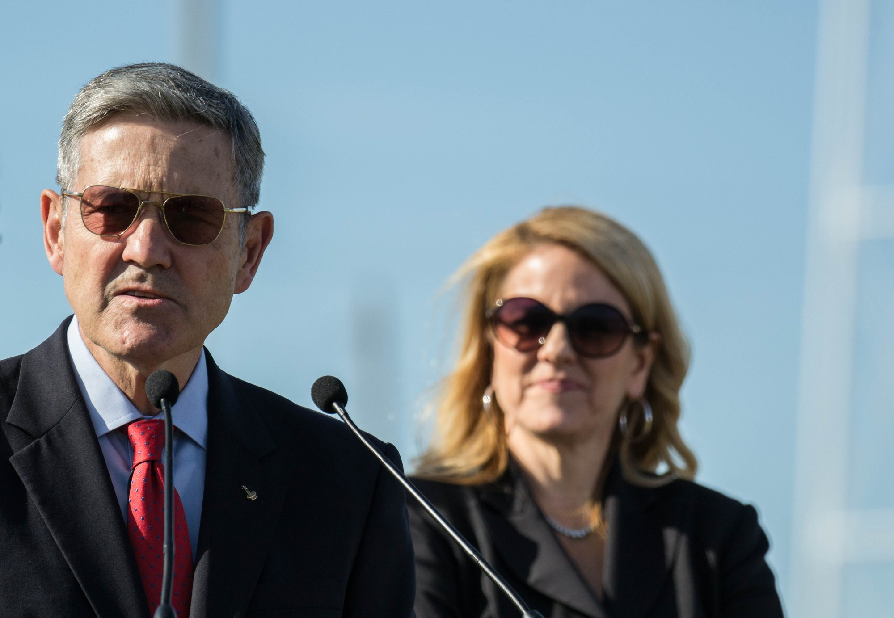

Venerdì 30 ottobre, alle 21:30 ora italiana, Gwynne Shotwell ha scritto su X il messaggio che molte famiglie americane aspettavano da luglio: «Robert and I are thrilled that our gift of over 2 million shares of SpaceX stock will be distributed to children’s Trump accounts in December!». Lei e il marito, cioè, sono felicissimi che il loro regalo di oltre 2 milioni di azioni SpaceX venga distribuito a dicembre nei Trump Accounts dei ragazzi. Le azioni, ha aggiunto, stanno passando in un deposito vincolato «as we speak», proprio in queste ore. Poco dopo le 23 Elon Musk ha risposto con due parole: «Cool» e un cuore.
Chi riceverà le azioni
Il regalo arriva in due tempi. La prima tranche, quella che sta entrando nel deposito, andrà ai ragazzi fra gli 11 e i 17 anni che vivono in un codice postale dove il reddito familiare mediano non supera i 57.000 dollari l’anno. Sono compresi anche i ragazzi che abitano in zone con così pochi residenti che il censimento non pubblica il dato sul reddito: piccoli centri rurali, territori isolati, comunità dove altrimenti nessuno potrebbe verificare il requisito. Le famiglie interessate, ha scritto Shotwell, dovrebbero ricevere un avviso entro lunedì 2 novembre.
La seconda tranche sarà definita «in a few weeks», nel giro di qualche settimana. Riguarderà tre gruppi: i figli di militari in servizio all’estero, i ragazzi in affidamento e altri ragazzi delle contee del Texas vicine alla casa degli Shotwell, dove la soglia di reddito familiare sale a 90.000 dollari. È la stessa attenzione per il Texas centrale che Shotwell aveva dichiarato fin dal primo annuncio.

Da luglio a ottobre: quattro mesi per costruire il percorso
La promessa risale al 6 luglio, meno di un mese dopo la quotazione di SpaceX al Nasdaq a 135 dollari per azione. Quel giorno Shotwell aveva scritto che lei e il marito erano «honored and thrilled», onorati ed entusiasti, di partecipare al programma Invest America e di dare una loro azione SpaceX al Trump Account di ciascuno di oltre due milioni di ragazzi. Aveva spiegato anche il senso del gesto: sperava che il regalo incoraggiasse la nuova generazione a continuare il cammino che permetterà all’umanità di vivere e volare fra le stelle.
Allora, però, il percorso non esisteva ancora. I Trump Accounts sono partiti il 4 luglio e il Tesoro ha pubblicato le regole temporanee solo il 30 settembre. Quelle regole ammettono le donazioni di azioni, ma con condizioni strette: a donare deve essere un ente pubblico o un’organizzazione benefica, ogni ragazzo del gruppo scelto deve ricevere la stessa quantità e serve l’approvazione del Tesoro. In più i conti, per legge, investono di norma in fondi che seguono un ampio indice di Borsa: un titolo singolo è un’eccezione che va gestita a parte. Come abbiamo raccontato il 20 ottobre, c’era anche un ostacolo specifico: le azioni possedute prima della quotazione, come quelle di Shotwell, sono considerate vincolate dalle regole della SEC, l’autorità americana di controllo della Borsa, e sono soggette all’accordo di blocco con le banche che dura fino a metà giugno 2027.
Il post di venerdì dice che quei nodi sono stati sciolti, senza spiegare come. Shotwell ringrazia la squadra di SpaceX, il Tesoro, l’IRS, cioè l’agenzia delle entrate americana, la Dell Foundation di Michael e Susan Dell, la fondazione comunitaria Greater Horizons, l’organizzazione Invest America e gli studi legali Morgan Lewis e Gibson Dunn, che hanno lavorato «over the past few months», negli ultimi mesi, per rendere possibile l’operazione. L’elenco fa capire che sono servite un’autorizzazione federale e almeno un passaggio attraverso il mondo filantropico; quale ruolo preciso abbia avuto ciascuno, per ora, non è stato reso pubblico.

Quanto vale, e perché conta per questi ragazzi
Alla chiusura di venerdì 30 ottobre il titolo SpaceX valeva 134,72 dollari, in calo del 6,4 per cento nella giornata e poco sotto il prezzo di collocamento di giugno. Oltre 2 milioni di azioni valgono quindi circa 270 milioni di dollari: per ogni ragazzo, una singola azione da circa 135 dollari, il cui valore salirà o scenderà con la Borsa fino a quando potrà essere venduta. Al momento della quotazione Shotwell possedeva circa 12,6 milioni di azioni SpaceX: il regalo equivale a circa un sesto del suo pacchetto.
Per una famiglia la cifra è modesta, ma per molti di questi ragazzi sarà il primo investimento della loro vita. Il Tesoro versa infatti 1.000 dollari solo nei conti dei bambini nati fra il 2025 e il 2028; chi ha fra gli 11 e i 17 anni non riceve nulla dal governo, e in molte delle famiglie che lunedì troveranno l’avviso il conto è oggi vuoto. Le regole prevedono inoltre che le azioni ricevute in dono, di norma, non si possano vendere per cinque anni o fino alla fine dell’anno in cui il ragazzo compie 17 anni, se arriva prima. Quando il titolare diventa maggiorenne, il Trump Account si trasforma in un conto pensionistico individuale.

La prova generale per la promessa di Musk
Il regalo di Shotwell è piccolo rispetto a quello annunciato da Elon Musk il 19 ottobre: una sua azione SpaceX a ogni bambino americano nel corso del 2027, circa 72 milioni di titoli, «the first of many», la prima di molte. Quel giorno Donald Trump aveva ringraziato Musk e indicato proprio i Trump Accounts come la strada per consegnarle. Da allora né SpaceX né il Tesoro hanno spiegato come e quando avverrà la distribuzione.
Ora però esiste un precedente concreto. Gli stessi problemi che riguardano le azioni di Musk, cioè titoli precedenti alla quotazione, blocco con le banche, passaggio attraverso un ente benefico e approvazione del Tesoro, sono stati affrontati e, a quanto pare, risolti per un regalo da oltre due milioni di destinatari. La differenza è di scala: Musk dovrebbe raggiungere un numero di conti circa trentacinque volte più grande, con un valore che ai prezzi di venerdì sfiora i 10 miliardi di dollari. Il percorso costruito in questi mesi da Shotwell, dagli avvocati e dalle istituzioni coinvolte è il modello più vicino che oggi si possa osservare.
Cosa seguire adesso
Le scadenze sono tre. Entro lunedì 2 novembre le famiglie della prima tranche dovrebbero ricevere l’avviso; nelle prossime settimane sarà definita la seconda, per figli di militari, ragazzi in affidamento e famiglie del Texas; a dicembre le azioni dovrebbero comparire nei conti. Resta da capire se il Tesoro o Invest America pubblicheranno i numeri definitivi e il meccanismo usato, informazioni che diranno molto anche sulla fattibilità della promessa di Musk.
Il dossier sul «Cliente B», cioè Anthropic e il calcolo per l’intelligenza artificiale che vale un terzo dei ricavi di SpaceX, passa all’archivio Notizie.
Fonti pubbliche e tracce
Ultimo aggiornamento editoriale: 31 ottobre 2026, ore 9:40 (ora italiana). Nel corpo non si ripete la fonte a ogni frase: le tracce sono raccolte qui. Gli orari dei post sono convertiti in ora italiana. Non è consulenza finanziaria.
- Gwynne Shotwell su X, 30 ottobre 2026, ore 21:30 italiane: oltre 2 milioni di azioni nei Trump Accounts a dicembre, azioni in deposito, criteri delle due tranche, avvisi entro lunedì, ringraziamenti.
- Elon Musk su X, 30 ottobre 2026, ore 23:11 italiane: risposta «Cool» con un cuore.
- Gwynne Shotwell su X, 6 luglio 2026, ore 11:34 italiane: primo annuncio del regalo, un’azione a ciascuno di oltre due milioni di ragazzi fra gli 11 e i 17 anni.
- Reuters, ripreso da U.S. News, 30 ottobre 2026: conferma dei dettagli del post, delle due tranche e delle soglie di reddito.
- Teslarati, 30 ottobre 2026: circa 12,6 milioni di azioni possedute da Shotwell alla quotazione, contributo del Tesoro di 1.000 dollari solo per i nati 2025-2028, conversione in conto pensionistico a 18 anni, collegamento con la promessa di Musk.
- Yahoo Finance, SPCX: chiusura di venerdì 30 ottobre 2026 a 134,72 dollari, in calo del 6,4%.
- Federal Register, regole temporanee sui Trump Accounts, 30 settembre 2026: donazioni di titoli da enti pubblici e charity, stessa quantità per ogni beneficiario, approvazione del Tesoro, limiti alla vendita.
- Rivoluzione Spaziale, dossier del 20 ottobre 2026: promessa di Musk, regole del Tesoro, vincoli sulle azioni precedenti alla quotazione e lock-up fino a metà giugno 2027.
Fotografie utilizzabili
La notizia è un annuncio pubblicato su X e non ha un evento fotografabile. Tutte le immagini sono libere: la copertina e la foto della ragazza allo Studio Ovale sono foto ufficiali della Casa Bianca dell’annuncio sui Trump Accounts del 7 ottobre 2026, di pubblico dominio; il ritratto di Shotwell del 2018 è della NASA, di pubblico dominio; la foto con Bob Cabana è di Daniel Oberhaus, licenza CC BY-SA 4.0. Dettagli in scheda dei crediti fotografici.
Apri il dossier sul Cliente B archiviato · Archivio Notizie · Torna a SpaceX